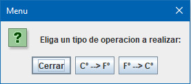
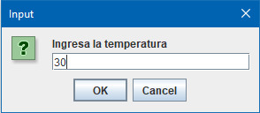
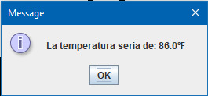
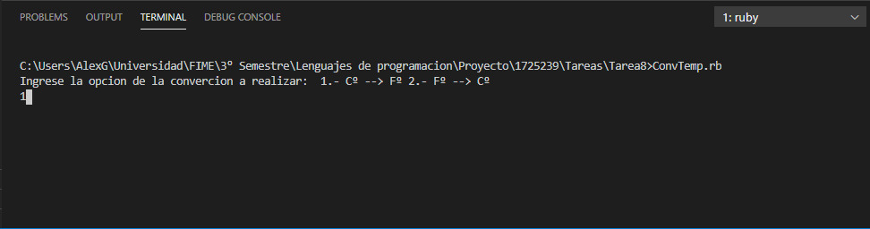
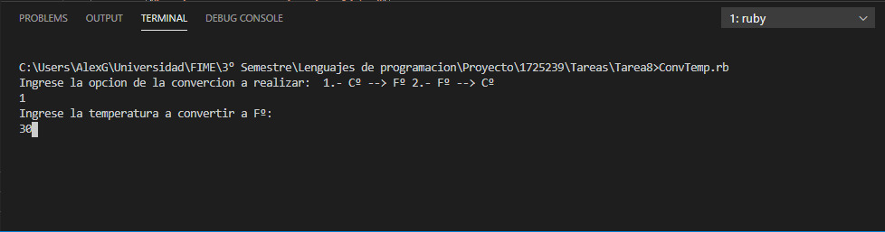
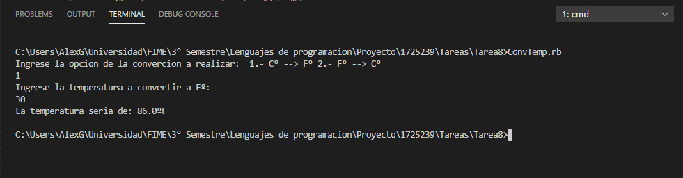

Tarea #8 Conversión de Temperatura
Elabore un programa en JAVA Y RUBY que mediante un Menú de opciones permita calcular la conversión de escala de temperatura:
De grados Centígrados a grados Farenheit
De grados Farenheit a grados Centígrados
(Nota: El cuadro de dialogo para seleccionar que sea usando botones: °C -> °F y otro °F -> °C)
package Tarea8; import javax.swing.JOptionPane; public class ConvTemp{ public static void main(String[] arg) { // Opciones del menu String[] option = { "Cerrar", "Cº --> Fº", "Fº --> Cº" }; // Ventana del menu int Dato2 = JOptionPane.showOptionDialog(null, "Eliga un tipo de operacion a realizar: ", "Menu", JOptionPane.YES_NO_CANCEL_OPTION, JOptionPane.QUESTION_MESSAGE, null, option, option[0]); // Mensaje para comprobar que el menu salio bien // JOptionPane.showMessageDialog(null,"Boton seleccionado: "+ Dato1); //Entrada de datos String ent = JOptionPane.showInputDialog("Ingresa la temperatura"); float Dato1 = Float.parseFloat(ent); if (Dato2==1){float res1 = (float) (Dato1 * (1.8) + 32); JOptionPane.showMessageDialog(null, "La temperatura seria de: "+ res1 + "ºF");} else {float res2 = (float) ((Dato1 - 32) * (0.55)); JOptionPane.showMessageDialog(null, "La temperatura seria de: "+ res2 + "ºC");} } }



Programa Codificado en Java
Op1 = " 1.- Cº --> Fº" Op2 = " 2.- Fº --> Cº" puts("Ingrese la opcion de la convercion a realizar: "+Op1+Op2) Dat1 = gets.to_i if (Dat1==1) puts("Ingrese la temperatura a convertir a Fº: ") val1= gets.to_i res1=(val1.to_f * (1.8) + 32).to_s puts("La temperatura seria de: "+ res1 + "ºF") else puts("Ingrese la temperatura a convertir a Cº: ") val1= gets.to_i res1=((val1.to_f - 32) * (0.55)).to_s puts("La temperatura seria de: "+ res1 + "ºF") end



Programa Codificado en Ruby
Menu Tareas
Tarea 7
Tarea 9